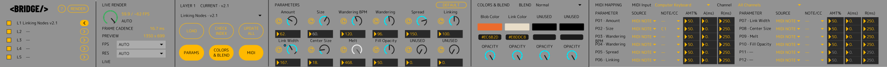
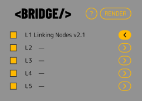
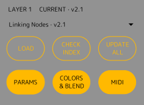
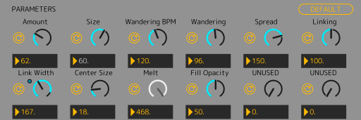
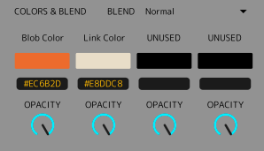
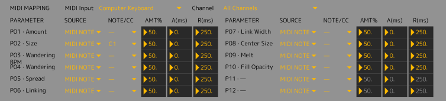
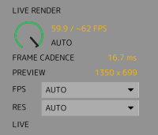

1
Layers
Open L1–L5, choose a tool and check its library status. Press LOAD, UPDATE or DOWNLOAD to use it; selecting the name alone does not change the running Layer.
Turn browser-native HTML sketches into visuals controlled from Ableton Live. Compose five layers, shape native parameters and colors, add MIDI modulation and perform through a dedicated live render window.

INDEX HTML BRIDGE is in testing and is not publicly distributed. This guide describes version 1.3 (testing). No public release notes or download are available.

Open L1–L5, choose a tool and check its library status. Press LOAD, UPDATE or DOWNLOAD to use it; selecting the name alone does not change the running Layer.
Open PARAMETERS, COLORS & BLEND and MIDI MAPPING in any combination.
RENDER opens the external Chromium compositor. Your five Layers are combined there.
Use RENDER, choose FPS/RES for your workload and save the Live Set to retain tools and controls.

Open one Layer editor at a time. Layer visibility is independent from whether its editor is open.
Choosing a tool in the dropdown only selects it. Press LOAD to use the selection. A new LOAD restores manifest defaults. Keep tools/ and the complete device folder together; local INDEX_TOOL RC2 and legacy SKETCH_TOOL files work offline.
Generators draw their own canvas. Effects receive the composite of the Layers beneath them and process that result.

Each Layer remembers its section visibility. Saving a Live Set also stores the loaded tools, native values, HEX, mappings and device settings. Changing a tool resets its values: there is no separate preset memory for every tool. Keep the local tool files available when reopening a Set.
The library compares the files installed locally with the INDEX catalogue. These labels explain each possible result:
Local file exists and installation version equals catalogue version.
Local file exists and installation version differs from catalogue version.
Installation metadata or resolved local file is absent.
Installed entry absent from the remote catalogue, with an existing local file.
Refreshes the remote catalogue and compares it with the flat local tools/ library. It does not download tools automatically.
Queues only MISSING and OUTDATED catalogue tools. CURRENT entries are left untouched; local-only fixtures remain local.
Depending on state, the action becomes LOAD, UPDATE or DOWNLOAD. A dropdown selection alone never changes the running Layer.

87 functional Live controls keep their identities, plus one hidden performance gauge. Each of the five Layers exposes up to 12 numeric slots, with independent color opacity and visibility controls.
Use the single reset beside a parameter for that control only. DEFAULT restores the loaded tool’s manifest defaults.
With internal Note/CC assigned, the dial uses a grey effective arc and needle, an updating final numerical readout and a separate reference to the native Live input. That input can already include Macro modulation. Mouse editing is disabled for the assigned slot; no cosmetic values are written back to Live. Unassigned slots retain native drawing.
The Live parameter remains the automation and external modulation target. Internal Note/CC temporarily owns the final value of an assigned slot; choose NONE to return it to native editing.

Up to four manifest-defined colors per Layer. Edit them with the native picker or #RRGGBB text; unused slots display UNUSED.
Color opacity is a native host control and does not consume P01–P12. Missing host opacity keeps the standalone tool behaviour unchanged.
Effect Layers do not use generator blend in the same way: their shader processes the lower composite directly.

Mappings start unassigned. Choose the MIDI input and channel, then a slot source and NOTE/CC ID. NONE unassigns a slot. Amount sets the contribution; attack/release shape its response. Assignments are Layer-specific and saved with the Set; the functional Live controls keep their automation identities.
Velocity becomes the modulation peak. Attack rises to that peak, then release returns automatically to zero.
The incoming 0–127 value becomes the target. Attack smooths upward movement; release smooths downward movement.
Choose NONE to return an internally mapped slot to native editing. Check its final value and destination response after changing assignment.
RENDER launches the localhost compositor in an external Chromium app window. Live state reaches one compositor SSE connection, then the five tool iframes through postMessage.
A ready local Node host, a supported installed Chromium browser and compatible Canvas/WebGL support are required.
RENDER uses a private browser session for each instance. It is designed to close its rendering processes when you close the output, toggle RENDER, switch Live Sets or quit Live. If the output remains open, see Troubleshooting.

PERFORMANCE appears between CORE and LAYER when external RENDER opens, and hides when that window closes.
Actual / target FPS shows completed visual frames. The display-only dial fills up to the target and cannot be edited. FRAME CADENCE reports the observed interval between completed frames in milliseconds, not GPU execution time. PREVIEW shows the effective buffer dimensions.
AUTO follows browser / display-driven cadence; its target is estimated (~). Fixed settings request a maximum of 30 or 60 FPS across the hosted tools and compositor. Actual FPS can be lower with heavier tools.
AUTO keeps window-dependent rendering. Fixed presets control pixel workload: 1280 × 720, 1920 × 1080, 2560 × 1440 or 3840 × 2160 in a 16:9 window. Other window shapes keep their framing and fill the window, using a buffer that fits within the preset dimensions. PREVIEW reports the actual size; Retina does not multiply a fixed preset.
The full composition scales to the RENDER window without zooming or cropping when RES changes. Settings survive closing and reopening RENDER and are saved with the Live Set. A new unconfigured device starts from AUTO / AUTO. If a buffer is unsupported, INDEX reports the error and restores the preceding selection.
Keep the complete folder together, load a local tool, and confirm Chromium is installed. RENDER opens an isolated app-style Chromium window; HELP uses the normal browser. Missing tool/module/font errors need the exact Console message and package version. CHECK refreshes metadata without replacing HTML; UPDATE explicitly downloads a selected tool.
Check the complete runtime folder, the ready Node host and a supported installed Chromium browser. Capture the first exact Console error and package/build version; missing UI or READY errors are separate from initial startup warnings.
Check whether a loaded Layer is visible, whether the selected tool was actually loaded, and the actual/target FPS readout. Reduce FPS or resolution for a heavy composition; a requested cap is not an achieved-rate guarantee.
Report the exact build and closure path. A session with uncertain ownership may be retained intentionally; do not close unrelated personal browser processes as a workaround.
Owns the native UI, Live parameter identities, MIDI mapping and the per-Set state contract.
Hosts the local bridge and library metadata, forwards live controls and owns the dedicated Chromium session lifecycle.
Draws Canvas/WebGL tools, composes the five Layers and processes effects through the existing renderer.
INDEX HTML stays browser-native. The fundamental split is simple: Max decides what happens; the browser decides how to draw it.